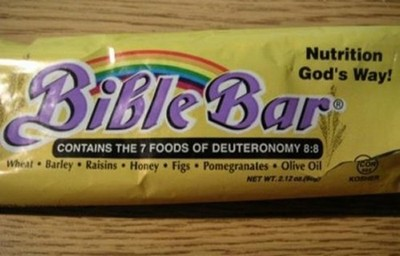

Wednesday, April the 30th, 2008
back to: title, date or indexes
As I am sure all Hooting Yardists know, Deuteronomy 8.8 reads : “A land of wheat, and barley, and vines, and fig trees, and pomegranates; a land of oil olive, and honey”—now all packed into one delicious snack bar!

You can find some other holy confectionery here, but before stuffing your face to the point of gluttony, do remember that elsewhere in Deuteronomy we are reminded of “that great and terrible wilderness, wherein were fiery serpents, and scorpions, and drought” (ie, Pointy Town).